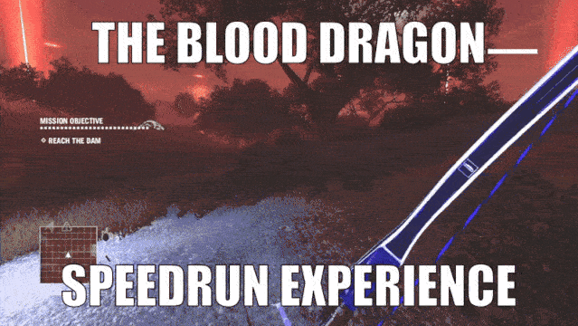
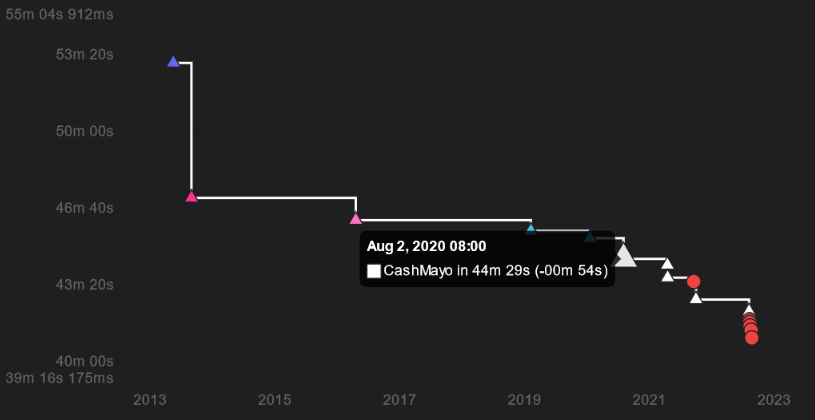
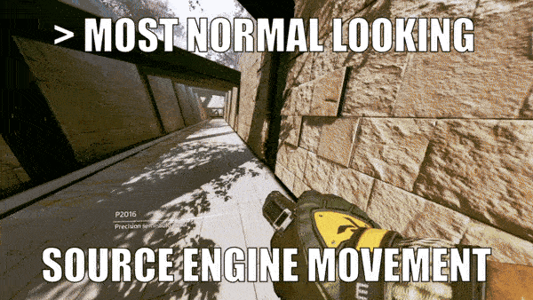

")

My Speedrunning Repertoire:
Far Cry 3: Blood Dragon
This masterpiece was released in 2013, following the critically acclaimed open world FPS, Far Cry 3. It shares its title and almost all of its gameplay mechanics with Far Cry 3, but it has a new story, a new open world, and a ton of new bad guys to take down! It takes place in the dystopian future; in 2007.
I embedded a teaser because the release trailer is age-restricted (for good
reason.)
You can watch the release trailer here.
I've always been a sucker for FPS titles and this one is no exception. I played this game during the 2020 lockdowns while going through my list of things I told myself I'd play if I had infinite time. First, I played FC3, then honestly expected FC3:BD to be an average DLC that was sold as a new game just for an extra buck, but I was wrong. The game's epic vibe, fun gameplay, and seeming self-awareness of its own humor and nonsense had me totally hooked. I loved just about everything about this game, which is why I decided to give the speedrun a try.
The majority of the speedrun is (unfortunately) a good bit of running place to place and waiting for autoscrollers (AKA setpieces with scripted timing) to finish. Which is par for the 'open world game' course. However, most of the cutscenes are skippable, which I'm quite thankful for, since that's pretty unusual for a Far Cry title. (Much like Blood Dragon as a whole!)
The part of the game that makes it worth running is the combat sections, because either: they DO require the player to eliminate some (or all) of the enemies. So the player must be proficient with combat tools, know the levels and the enemy positions/patterns, and adapt quickly to any actions the enemy AI takes. OR: they DON'T require the player to eliminate any enemies, and so create a type of challenge where the player has to safely and swiftly navigate through dangerous arenas as fast as possible without getting caught up on the enemies.
Back when I started running the game midway through 2020, the Any% record was 45 minutes and 23 seconds, and development of the speedrun had essentially stagnated. But in the past few years since I've started running the game, the FC3:BD speedrunning community has worked together (and Zaiydo and myself have competed) to bring the record down to 41:03 (by Zaiydo)!
You can view this graph for yourself at this page.
Titanfall 2
I pre-ordered this game back in 2016, and knew it was special from the time I got it home and played through it. (I actually knew it was special months before, during the pre-alpha playtests!) It's a futuristic FPS with a focus on advanced movement abilities and mech-combat. Unlike its predecessor, Titanfall (which was multiplayer only), Titanfall 2 includes a single-player story that's full of uniquely designed levels and setpieces for all of the game's awesome mechanics.
Teaser trailer again. (First person shooters seem to include
a lot of shooting for some reason... Hm.)
You can watch the cinematic
trailer here.
The game runs on Respawn Entertainment's modified branch of Valve Software's Source engine. If you're familiar with the Source engine, you may know it as a quirky engine with a ton of tricks that are utilized by the speedrunners of Valve Software games. That, combined with all of the incredibly skill-rewarding parkour elements in Titanfall 2, makes for one of the most deep and skillful movement based FPS speedruns to ever exist.
This game was actually the first game I ever speedran. (You can read the story of my discovery of speedrunning here!) I got really good at the timed course in the very first level of the game: The Gauntlet. I also did quite a bit of running the campaign, even taking the world record once, but my main bread and butter has always been the Gauntlet. (If you want to learn more about my campaign/gauntlet achievements, you can view my showcase here!)
My position within the game's speedrunning community was distinctive. While most of the top runners in the community played on keyboard and mouse, I played on controller as a result of being on console for the first couple of years I speedran. I wouldn't say I am or ever was the "best" controller player, but I was certainly willing to push myself without letting my atypical input method discourage me. (I was "built different" as they say.)
–Until the later half of 2020, when some keyboard exclusive techniques started seeing extensive use within the run. It was quite discouraging to see everyone discussing new routes and tech, while I was doing my same old thing and being surpassed by the players I once loved competing against. For a while, I tried implementing the keyboard tech into my own runs via controller mapping software (which we voted to be legal!) But the harder I tried to match what could be done on a keyboard with my controller, the further I strayed from playing the game I loved in the way I loved to play it...
I still do Gauntlet runs to this day, because it's the only part of the game where keyboard exclusive tech isn't an advantage (yet?) and I still talk in the TF2SR discord server once in a blue moon. I have all love and respect for the Titanfall 2 Speedrunning community. I just don't have it in me to run the campaign anymore, but boy do I wish I did. What a blast it was!!!!!
Honorable Mentions:
As well as the games I've given a shot and stuck with, there's a number of games I gave a shot and
didn't stick with. This will include a mention of each title with a short description
of
the game and what is good or bad about the speedrun. All of the games listed here are GREAT casual
experiences; otherwise I would never want to speedrun them. So definitely no negative feelings
about any of these titles. I just never kept at their speedrun for one reason or another.
Lil Gator Game-
I mentioned before that I'm a sucker for FPS titles. This is not one of them, which might be the primary reason it wasn't my jam. It's a cute game, and I adore it, but I never quite got the hang of the speedrun. Most of the run is focused on precise movement with the shield sliding mechanic to navigate the open world. I ran it for about a week, started about 100 runs, finished just over a dozen runs, and submitted one or maybe two of them before I set it down. Fun game, and honestly, great speedrun, it just never clicked with me very well.
Lightstrafe-
A demo made by a fellow speedrunner, Fzzy. It's inspired by Titanfall 2's movement, but really puts focus on flow and precision as core gameplay elements. It consists of eight individual levels that vary between 10-40 seconds long. It's here and not with the main titles because it's been a hot minute since I played: It isn't being developed, it doesn't have much of a "community" to speak of, and being a demo, it has some small bugs that irk me bigtime as a runner. But man did I love grinding this game. It's totally epic mode, for real.
Jungledyret (MS-DOS)-
Ha, surprise! Another mention of Jungledyret Hugo! (You can read my take on the Jungledyret franchise here!) I actually have quite a bit more to say about this one than the other mentions. The Jungledyret game is a 1995 DOS sidescroller that was made to promote the second Jungledyret film that would release the following year. Modern operating systems no longer have the DOS resources to run it; it requires an emulator like DOSbox to play on modern systems.
This is just the first level, if you want to see the rest of the game, here's a playlist.
This game is pretty. Seriously, even in an emulator window instead of on the hardware it was specifically envisioned for. I can only imagine how pretty it looked on a 4:3 aspect ratio CRT monitor before I existed. ALSO, the music is phenomenal, done by Johannes Bjerregaard as one of his final video game music compositions in the 90s. It's very clear that a lot of talent went into making this game as good as it is (and play as good as it does!!!) for the time it was in.
Even though I say it "plays good", it has a particular aspect that irks me as someone fluent in the language of video games: Hugo is forced into an animation each time he: touches fruit, or takes any damage, or steps to close to a ledge, or runs too close to a wall... But this issue clearly doesn't stem from lack of creator capability; it stems from the fact that video games as a medium have evolved tremendously in the years between 1995 and now. Trying to play this 1995 DOS game after over a decade of gaming experience in the 2010s was like learning a new language, or perhaps like learning an older dialect of a language in which I am fluent in a newer dialect. I ended up enjoying it, but the steepened learning curve sure did a number on me. The fact that it's hard to begin with is a whole other thing.
Oh, yeah. This game is hard. I discovered the game through Dan Harder's blog posts (here and here) about its development. In the first one, he said that "the game was a bit too hard for the target audience." ... He was not kidding. It's like, will-take-you-days-of-dedicated-attempts-to-beat-on-the-easiest-difficulty type of hard. Personally, it took me three days to beat it on easy mode. The fact that completing it at all was a challenge was what made me want to try speedruns of it.
It's a short speedrun, being about 10-11 minutes long. It has a few neat tricks and skips, along with a healthy serving of holding the right arrow key, and waiting around for the three minute autoscroller in the middle of the game to pass. But I jest, I actually seriously enjoyed running this game on the side whenever my other speedgames got on my nerves. The amount of skill it requires to complete, along with all of the precise moves and small optimizations within it (including saving time by avoiding all of the forced animations I mentioned earlier), make for a shockingly good speedgame. It has a surprising amount of tech for what it is!
If I like it so much, why's it on this list? Well, it sold only about 20,000 copies, exclusively to Scandinavia, almost three decades ago. A community for the game never existed, or had the chance to, and my drive for self competition is only so powerful. However, that would never change the fact that I have the softest spot in the world for this old, forgotten piece of abandonware.